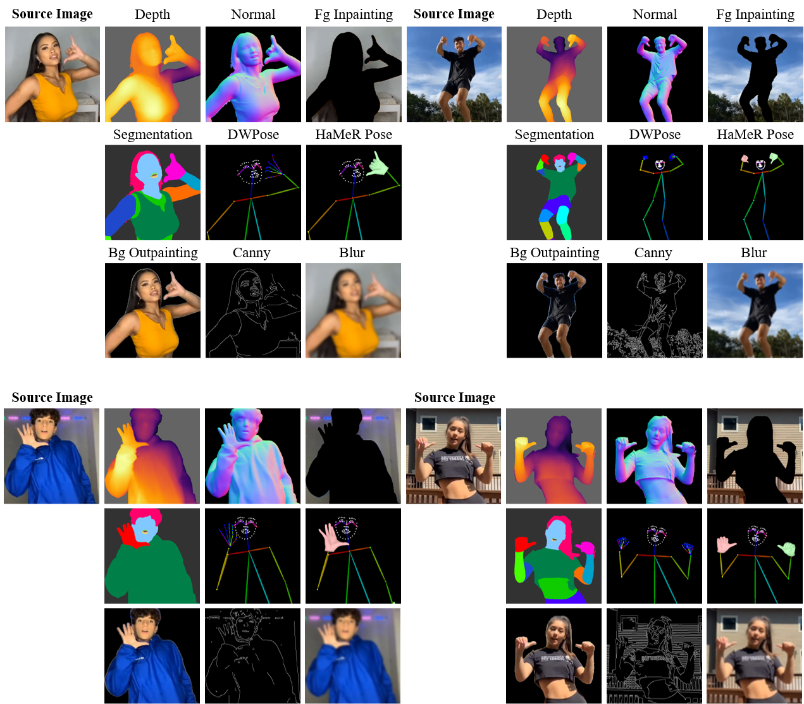
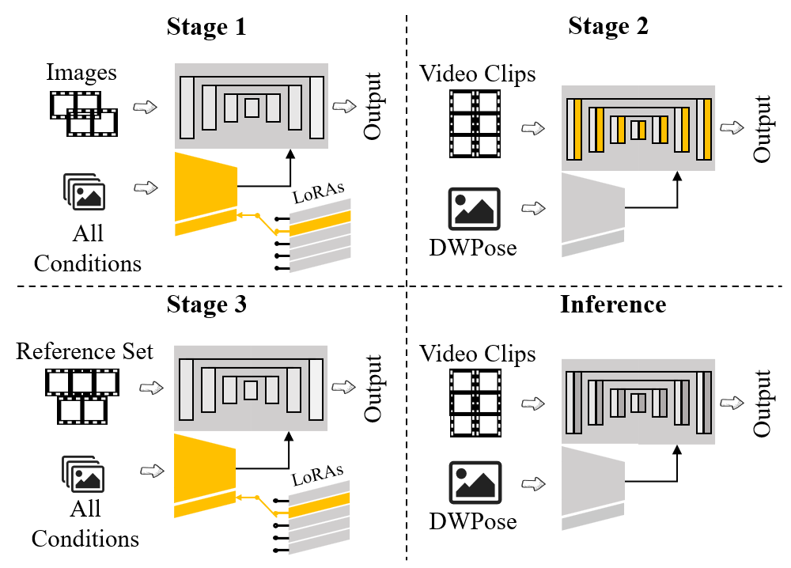

Meta-Animator: Meta-Learning-Driven Human Image Animation with Text-Guided Identity Preservation
Abstract
Human image animation aims to animate a reference image according to a driving pose sequence, but achieving high-fidelity and temporally coherent results remains challenging, especially under limited data conditions. Existing diffusion-based methods often require large-scale training resources and extensive tuning to generalize across diverse identities and motions. In this paper, we propose Meta-Animator, a novel framework for human image animation that unifies meta-learning with multi-condition guided latent diffusion. Meta-Animator introduces a compact reference identifier mechanism to encode identity information and employs a collection of condition-specific tasks, termed Meta-Tasks, to efficiently guide the model in learning both foreground and background dynamics. We further design a flexible training pipeline that combines large-scale image pre-training with lightweight few-shot fine-tuning, enabling the model to generalize to unseen subjects with as few as five reference images. Comprehensive experiments demonstrate that Meta-Animator achieves competitive image and video quality with significantly fewer training resources compared to existing methods. Our findings suggest that integrating meta-learning with conditional diffusion provides a scalable and data-efficient solution for subject-driven video generation.
Figure 1: The fine-tuning and inference pipeline of Meta-Animator. With a small reference set (typically 5 images of the same identity), Meta-Animator fine-tunes the model by assigning a unique reference identifier to each reference identity, establishing an implicit mapping in parameter space. During inference, the model generates animations of the reference identity by conditioning on a pose map and a text prompt containing the trained reference identifier.
A. Network Architecture
The architecture of Meta-Animator adopts the pretrained components from a stable latent diffusion model, including the Denoising U-Net, VAE, and CLIP Text Encoder. To support multitask learning, we introduce Meta ControlNet, which integrates task-specific LoRA modules. During training, each batch focuses on a single task with the corresponding LoRA dynamically loaded into the network. The model iterates through all tasks in cycles, enabling efficient adaptation across varied animation conditions.

Figure 2: The proposed Meta-Animator framework. Meta-Animator integrates Meta ControlNet, which leverages condition-specific LoRAs to enable multi-task learning within a single model. During training, each batch is assigned a specific task, with the corresponding LoRA dynamically integrated into ControlNet for gradient computation and parameter updates. The process iterates across tasks, allowing the model to learn diverse conditions simultaneously.
(1) Exclusion of ReferenceNet.
Unlike conventional human image animation frameworks, Meta-Animator eliminates the need for a dedicated ReferenceNet. Traditionally, this module injects fine-grained features via an additional U-Net, increasing training and inference costs. Meta-Animator instead encodes reference image information implicitly using meta-learning and task-specific reference identifiers, allowing efficient retrieval without requiring extra modules or heavy computation.
(2) Retention of CLIP Text Encoder.
While many existing methods replace the CLIP text encoder with image encoders to ingest reference photos, Meta-Animator retains the original text-based encoder. This design choice maintains compatibility with the pretrained U-Net and avoids the need for extensive retraining. By associating visual identity with a unique textual identifier, our method enables effective animation while preserving both high-level semantics and training efficiency.
B. Meta-Tasks for Structured Feature Learning
To improve identity consistency and feature learning efficiency, Meta-Animator introduces Meta-Tasks — a set of diverse, purpose-driven training objectives designed for cross-task generalization. These tasks help the model both memorize identity features and generalize across complex motions and scenes.
Meta-Tasks are grouped into three categories:
- Foreground Learning Tasks (FLTs): Focused on capturing identity-relevant details such as pose, depth, and surface normals. They include guides like DWPose, segmentation maps, and hand-aware signals like HaMeR.
- Background Learning Tasks (BLTs): Enhance stability in background generation under dynamic foregrounds, primarily through background outpainting.
- Global Learning Tasks (GLTs): Improve the model’s understanding of overall scene layout via Canny and blur-based guidance.
Each task corresponds to a condition-specific LoRA module that can be activated or deactivated flexibly. The default setup includes nine tasks. Additional tasks can be integrated to enhance animation quality, though the relationship between task count and performance is non-linear. Ablation studies validate the impact of different task configurations.

Figure 3: Representative examples for the Meta-Tasks.
C. Dual Space Hybrid Loss
Most latent diffusion models operate in latent space for efficiency, which works well for tasks focused on high-level semantics. However, human image animation demands precise identity preservation — a challenge for latent-only loss. To improve detail fidelity, we propose the Dual Space Hybrid Loss (DSH Loss), which jointly supervises both latent and image spaces.
After half an epoch, DSH Loss replaces the original MSE loss and is applied selectively when the timestep is between 0 and 124, where the denoised output is closer to the ground truth and image-space loss becomes more meaningful.
The total loss is computed as:
The latent-space loss is defined as:
The image-space loss includes a denoising loss and a face similarity term:
To enhance facial consistency, we compute a cosine similarity between face embeddings extracted from predicted and ground-truth images using ArcFace:
By jointly optimizing DSH Loss, the model balances structural accuracy in latent space with fine-grained fidelity in image space — especially for preserving identity-critical facial regions.
D. Training Strategy and Inference Pipeline

Figure 4: Training strategy and inference pipeline.
Our training pipeline consists of three stages, each designed to progressively improve task generalization, motion modeling, and subject-specific adaptation. The full structure is shown in Figure 3.
Stage 1: Image Pre-training.
The model is first trained on independent video frames using a variety of Meta-Tasks. This stage establishes a mapping between reference identifiers and visual features, helping the model learn to encode identity information. Only the ControlNet and condition-specific LoRAs are optimized, totaling approximately 589M trainable parameters.
Stage 2: Temporal Learning.
We introduce video clips and optimize the motion module to capture temporal dynamics. To avoid overfitting, only the LoRA from the DWPose task is retained as trainable; all other components are frozen. This stage has about 417M trainable parameters.
Stage 3: Few-shot Fine-tuning.
Given a small reference set of K images, the model is fine-tuned using all Meta-Tasks. To prevent overfitting and maintain LoRA generalization, we also incorporate 20 auxiliary reference sets from the Stage 2 video data. This step takes roughly 10 minutes on a single NVIDIA L20 GPU.
During this fine-tuning stage, the motion module is temporarily removed, and the model structure reverts to that of Stage 1.
Inference.
At test time, only the DWPose LoRA and the trained motion module are active. The initial noise is obtained via DDIM inversion of the first reference frame, ensuring temporal coherence across the generated animation.
Notably, Meta-Animator achieves high-quality human image animation using just a few reference images—without requiring a ReferenceNet or retraining the U-Net.
Comparisions with Existed Approaches
We compare Meta-Animator with several state-of-the-art human image animation methods, including AnimateAnyone, Champ, MimicMotion, and StableAnimator. As shown in the following video comparisons, Meta-Animator delivers animation quality on par with leading methods.
Animation Results
We further present animation results generated by Meta-Animator on data outside the TikTok dataset. These examples demonstrate that our method produces high-quality animations while effectively preserving the identity of the reference subject. (Note: All results were obtained via fine-tuning on 5 reference images. For visualization clarity, only one reference image is shown here.)
Acknowledgements
The website template was borrowed from Michaël Gharbi and Mip-NeRF.